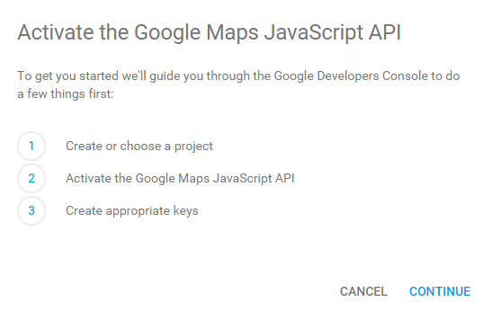
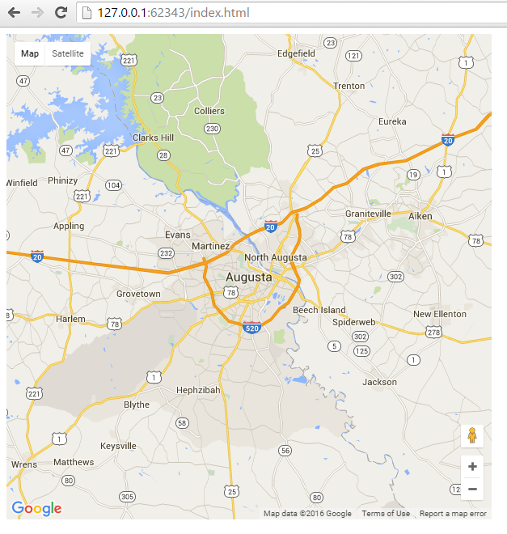

Introduction
Google offers many different API's for their different search, web and data analytic services. For this how to guide we will be focusing on the Google maps API and adding map functionality to your website. To begin, Google's documentation can be found at the following link: Google documentation. One of the nice things about Google's Maps v3 API is there is no need for an API key if you stay under 1,000 requests per day. That being said creating an API key is free and allows you to monitor and track the API usage. Once you go over a certain number of requests per day then you will be charged based on API usage. The pricing structure can be found here.
Getting an API key
Even though for the amount of requests used to create this how to guide an API key was not required the steps to get one are laid out below for completeness and in case necessary. On the main Google documentation page https://developers.google.com/maps/documentation/javascript/ Choose the following Get a Key option at the top

On the next screen Activate the Google Maps Javascript API choose Continue.

Next create a new project and choose continue.
On the credentials page choose create credentials and create a new API key.

Next choose browser key

Finally name the browser key and input any HTTP referrers to limit API requests to only your sites so no one can use your API requests.

Adding a Map
In order to add a map to a web page i've added the following sample code which is a barebones example of initializing an HTML site and adding a map. The map is centered on my hometown of Augusta Georgia!
<!DOCTYPE html>
<html>
<head>
<script src="http://maps.googleapis.com/maps/api/js">
<script>
function loadMap() {
var mapOptions = {
center:new google.maps.LatLng(33.474246, -82.00967),
zoom:10,
mapTypeId:google.maps.MapTypeId.ROADMAP
};
var map = new google.maps.Map(document.getElementById("test"),mapOptions);
}
google.maps.event.addDomListener(window, 'load', loadMap);
</script>
</head>
<body>
<div id="test" style = "width:600px; height:600px;"></div>
</body>
Now here is the result!

Walking through the example
Google has very extensive documentation for all of their API's which can be overwhelming so this guide will be about starting at the absolute basics and going over available options and getting a map started and working from there.
So the very first part of the non HTML code is setting the source for where the data the API we're accessing is.
The first example below is the basic javascript API call without an individual API key
<script src="http://maps.googleapis.com/maps/api/js"> <script src="http://maps.googleapis.com/maps/api/js?key=YOUR_API_KEY&callback=initMap">YOUR_API_KEY is replaced with the series of letters and numbers generated when you create the API key.
So a completed example could look like the following (fake API key used for the example)
<script src=" href="https://maps.googleapis.com/maps/api/js?key=HSD2349f12hfn28cn2109x8h3nc8je2o1icj9045&callback=initMap">
Within the create map function the next important piece is the var mapOptions
Google provides many different map options to customize the map for all sorts of applications. There are 36 different map options which can all be found here: Map option documentation
Some of the most important options include the following which are required:
center - The center of the map's latitude and longitude coordinates in the form center:new google.maps.LatLng(33.474246, -82.00967)
zoom - The amount of the map that is shown by default in the form zoom:10 the zoom will always be a number. The smaller the number the closer in the default zoom.
Some other options that are not required but are very useful include:
mapTypeID - The kind of map that will be displayed in the form google.maps.MapTypeId.ROADMAP the options are ROADMAP - which is the standard map, SATELLITE which is satellite images, TERRAIN which shows physical features on the roadmap and HYBRID which is a satellite map that has roads depicted on it.
The next piece used to create a new map is the var map
This creates a new google maps object within the container element "test" in this example using the mapOptions that were configured in the previous section
var map = new google.maps.Map(document.getElementById("test"),mapOptions);The next portion is the DOM listener event that triggers the map to load on the page load by using the 'load' option.
google.maps.event.addDomListener(window, 'load', loadMap);Authors and Contributors
You can @mention a GitHub username to generate a link to their profile. The resulting <a> element will link to the contributor’s GitHub Profile. For example: In 2007, Chris Wanstrath (@defunkt), PJ Hyett (@pjhyett), and Tom Preston-Werner (@mojombo) founded GitHub.
Support or Contact
Having trouble with Pages? Check out our documentation or contact support and we’ll help you sort it out.